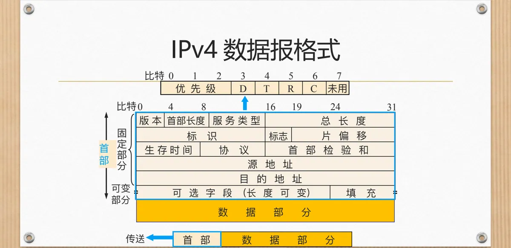
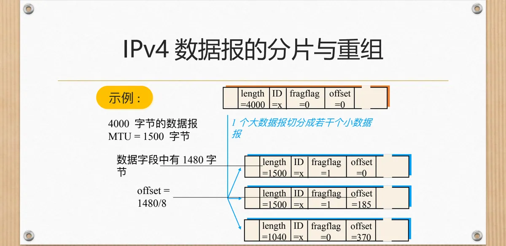
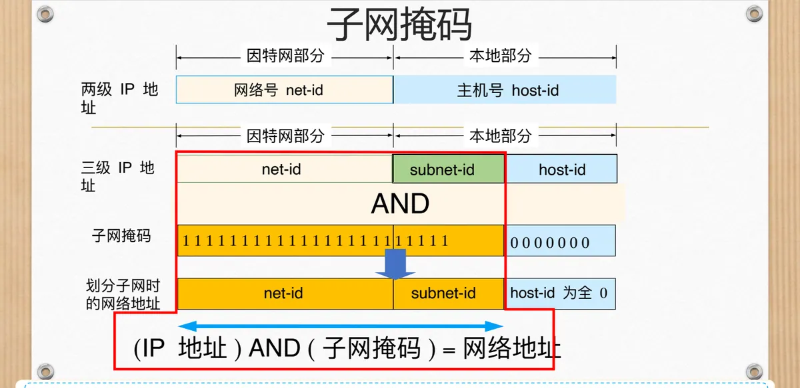
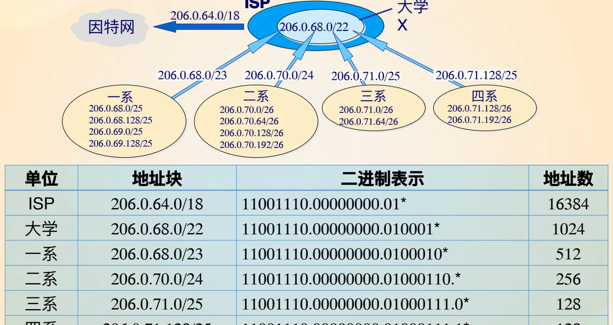
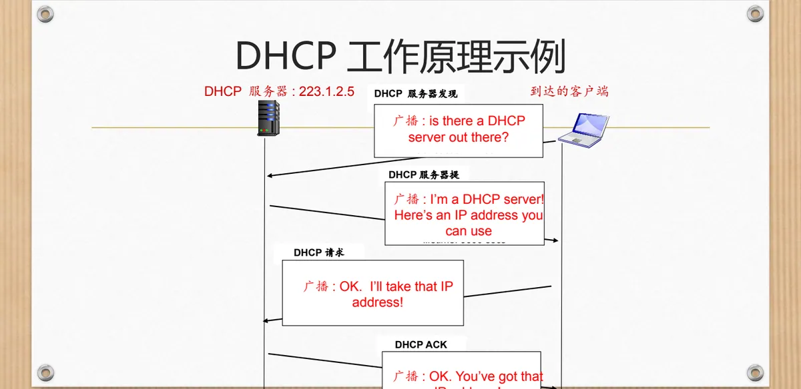
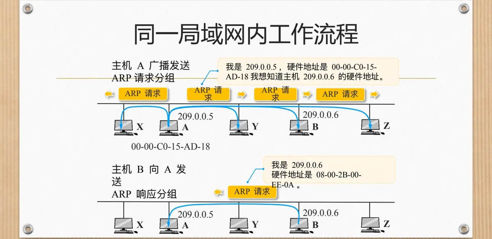
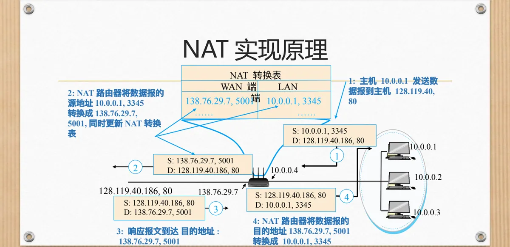
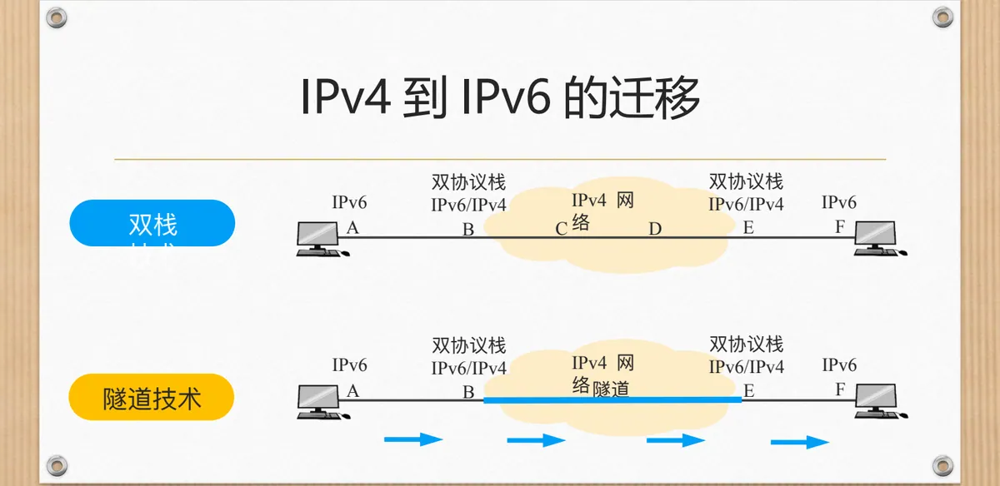

计算机通信与网络 · 第二版讲义 · 第 5 章 网络互联
5.3 网络互联中的数据转发
把两个网络连起来只是第一步。分组真正能从源主机走到目的主机，靠的是沿途每一台路由器上的一次次查表与转发。转发要成立，先得有唯一标识与寻址机制，再得有路由选择和一套封装、转发、解封装的处理流程——载体就是 IPv4 数据报：首部字段决定了地址放在哪里、分片怎么做、生存时间怎么算。以下沿「数据报与分片 → 地址与子网 → CIDR → 主机地址的获取 → 地址解析 → NAT → IPv6」的顺序展开。
1. 数据转发的基本需求
数据转发要解决三件事。第一是唯一标识和寻址机制：每个接口都要有一个唯一的名字，分组才能说清自己要去哪里。第二是路由选择：知道目标地址之后，还要根据它选出一条路径，决定下一站交给谁。第三是数据包处理流程：分组每一站都要经过封装、转发、解封装——加上首部、查表送出、再剥去首部交给上层。
三件事分别对应网络层的地址、选路与转发：5.1 节的数据报网络把每个分组独立对待，5.2 节的路由器给出查表与交换的硬件过程，本节关心的正是夹在中间的规则——数据报长什么样，地址怎么编，查表怎么查。
2. IPv4 数据报的格式
IPv4 的数据报由首部和数据两部分组成，首部又分为长度固定的固定部分与长度可变的可变部分。固定部分共 20 字节，是所有数据报都必须有的；可变部分即长度可变的可选字段，其后用填充补齐到 4 字节的整数倍。首部之后的数据部分承载上层交下来的报文。

（1）版本、首部长度与服务类型
版本占 4 比特，标明数据报属于哪个版本的 IP 协议，如 IPv4、IPv5、IPv6；版本协议不同，双方的格式对不上，无法通信。紧随其后的 4 比特是首部长度，单位是 4 字节，取值范围 5–15，也就是 20–40 字节：取值为 5 时首部只有固定部分，大于 5 说明带上了可选字段。
接下来 8 比特是服务类型，用于服务质量保证。旧的定义里，每一位分别代表最小延时、最大吞吐量、最高可靠性、最小成本，只选一个；最新的定义用其中 6 位表示区分服务，另 2 位保留。这一字段把「尽力而为」的 IP 与后来的服务质量需求连了起来。
（2）总长度与分片用的三个字段
总长度占 16 比特，单位是字节，取值范围 0–65535，指的是首部加数据的总字节数，因此实际的数据长度为总长度减去首部长度。16 位定下了单个 IP 数据报的长度上限，也埋下了分片的伏笔：以太网链路只允许 1500 字节的报文，超过就得分拆。
与分片直接相关的有三个字段。标识占 16 比特，同一次上层报文（可能超过 1500 字节）切出的各个分片使用相同标记，目的主机凭它把分片认回同一家。标志占 3 比特，1 位保留，另外 2 位分别表示能否分片、分片是否结束，「是否结束」为 1 表示后面还有分片，为 0 表示这是最后一片。片偏移占 13 比特，指出本分片的数据在整个原报文中的位置，度量单位是 8 字节。三者配合，接收端才能把散落的碎片还原成原来的数据报。
（3）生存时间、协议与首部检验和
生存时间 TTL（Time To Live）占 8 比特，做的是分组寿命管理：每经过一个节点减 1，减到 0 即被丢弃，从而避免数据报进入循环路由后永远退不出来。它也顺便反映了源、目的主机之间的跳数；不同系统对 TTL 默认最大取值的设定并不相同。
协议占 8 比特，标明首部之后的数据属于哪个上层协议，接收端据此决定把数据交给谁。首部检验和占 16 比特，用于差错检测，并且只检验首部。
| 协议号 | 对应的协议 | 协议号 | 对应的协议 |
|---|---|---|---|
| 1 | ICMP | 8 | EGP |
| 2 | IGMP | 17 | UDP |
| 4 | IP | 41 | IPv6 |
| 6 | TCP | 89 | OSPF |
这张表解释了一个常见现象：网络层并不直接认识 TCP 或 UDP 这些名字，它只认识一个号码，收到数据报后按号码把数据「分诊」给对应的上层协议。协议号为 1 的 ICMP 由 5.4 节专门讨论。
（4）地址、可选字段与填充
源地址与目的地址各占 32 比特，分别是发送端和接收端的标识，数据报的全部寻址能力就落在这 64 位上。首部最后是可选字段，长度可变，用于记录路由、时间戳一类不常用的信息，写上之后要用填充把首部补成 4 字节的整数倍，因此首部长度有两种可能：20 字节到 60 字节。
3. 数据报的分片与重组
链路层帧的大小是有限的，不同类型的链路这个上限也不一样，它称为最大传输单位 MTU（Maximum Transmission Unit）。以太网链路只允许 1500 字节的报文，而 IP 数据报最大可以有 65535 字节，于是问题必然出现：总长度超过链路报文大小的数据报，怎样才能送过去？
办法是分片：把一个大数据报拆分为几个小数据报，各自封装成帧分别送往目的主机，最后在目的主机上重组。重组只在目的主机进行，沿途路由器只拆分、不拼装——各个分片可能沿不同路径到达，中间路由器既没有理由为它们保留缓存，也没有必要为此消耗存储。首部的标识、标志、片偏移三个字段正是为此服务：标识说明「我们出自同一个数据报」，标志说明「后面还有没有分片」，片偏移说明「我在原数据报中位于第几段」。
课件给出的算例可以看清三者的配合。一个 4000 字节的数据报要通过 MTU 为 1500 字节的链路，首部 20 字节，于是每一片最多携带 1480 字节数据。
分片 length ID fragflag offset 数据字节数
第 1 片 1500 x 1 0 1480
第 2 片 1500 x 1 185 1480
第 3 片 1040 x 0 370 1020几个数字都能对上：每片的总长度等于自己的 20 字节首部加数据，1500 = 20 + 1480，1040 = 20 + 1020；片偏移以 8 字节为单位，所以第 2 片的位置是 1480/8 = 185，第 3 片是 2960/8 = 370。三片的数据合起来 1480 + 1480 + 1020 = 3980 字节，恰好是原数据报去掉 20 字节首部后的全部数据——分片没有丢数据，只是把首部多复制了两份，总长度由 4000 字节变成了 4040 字节。也正因片偏移以 8 字节为单位，除最后一片外，其余各片的数据长度都必须是 8 的整数倍。

到了目的主机，重组按标识把分片归成一组，再按片偏移排好次序，看到 fragflag 为 0 的那一片就知道收齐了。代价也直接：只要有一片中途丢失，整组分片就无法还原，只能全部丢弃重传，IPv6 因此把这件事改交给端结点。
4. IP 地址：接口的标识与地址分类
数据报首部里的 32 位源地址和目的地址，究竟标识的是什么？课件先抛出一串问题：IP 地址用来表示什么，一台主机、路由器只有 1 个 IP 地址吗，IP 地址是否就表示对应的物理接口？答案的关键在于，IP 地址与接口有关，而与主机、路由器本身却没有太多关联。它适用于主机、路由器内部以及它们之间的物理链路和逻辑链路接口，所以一个接口配一个地址；路由器连接多个网络，因而总是具有两个或两个以上的 IP 地址。
32 位的地址在结构上分成两段：前面的网络号 net-id 和后面的主机号 host-id。写成二进制时，223.1.1.1 就是 11011111 00000001 00000001 00000001，平时则为便于阅读写成点分十进制。这样分成两段不是随意的：网络号让路由器不必记住每一台主机的具体位置，只要知道「去往某个网络该走哪条路」即可，地址因此具备了层次性。
32 位 IPv4 地址： 网络号 net-id 主机号 host-id
223.1.1.1 = 11011111 00000001 00000001 00000001那么 IP 地址为什么要分类？课件的回答很直接：地址总数约 40 亿，分类是为了便于寻址和层次化地构造网络——不同规模的网络需要不同粒度的地址块，用首部的头几位把地址分成几档，路由器看前几位就知道网络号有多长。五类地址的划分如下。
| 类别 | 首部特征 | 网络号位数 | 主机号位数 | 适用规模 |
|---|---|---|---|---|
| A 类 | 第 1 位为 0 | 8 位 | 24 位 | 大型网络 |
| B 类 | 前 2 位为 10 | 16 位 | 16 位 | 中型网络 |
| C 类 | 前 3 位为 110 | 24 位 | 8 位 | 小型网络 |
| D 类 | 前 4 位为 1110 | 组播地址 | —— | |
| E 类 | 前 4 位为 1111 | 保留为今后使用 | —— | |
网络号与主机号各占多少位，直接决定了这类地址能装下多少网络、多少主机。课件给出一组数字：A 类 127 个网络、每个 16777214 台主机，B 类 16384 个网络、每个 65534 台主机，C 类 2097150 个网络、每个 254 台主机。主机数都比 2 的整幂次少 2，减掉的是主机号全 0 与全 1 这两个地址：全 0 留作网络地址，全 1 留作本网络的广播地址。
| 类别 | 网络数 | 每个网络的主机数 |
|---|---|---|
| A 类 | 127 | 16777214 |
| B 类 | 16384 | 65534 |
| C 类 | 2097150 | 254 |
类别只有五档，网络规模却千差万别，「粒度太粗」正是后面 CIDR 要解决的问题。
5. 互联网中的 IP 地址
IP 地址的规则在单个网络里好说，放进互联网就要多说一句：在同一个局域网上的主机或路由器的 IP 地址中的网络号必须是一样的，它就是地址中的 net-id。课件用一个由三台路由器连接若干网络的图来说明这一点，各网络的地址形如：
LAN1：222.1.1.1 ~ 222.1.1.4 网络号 222.1.1
LAN2：222.1.2.1 ~ 222.1.2.5 网络号 222.1.2
LAN3：222.1.3.1 ~ 222.1.3.3 网络号 222.1.3
N1 ：222.1.4.1、222.1.4.2 网络号 222.1.4
N2 ：222.1.5.1、222.1.5.2 网络号 222.1.5
N3 ：222.1.6.1、222.1.6.2 网络号 222.1.6图中 R1、R2、R3 三台路由器把这些网络与互联网连起来：同一网络内部的地址只有最后一段不同，网络号完全相同；路由器处在网络交界处，连接几个网络就有几个网络号互不相同的地址，这正是「IP 地址与接口有关」的落地结果。
6. 子网划分与子网掩码
分类编址遇到的两个现实问题，课件用两个场景摆了出来。第一个场景是「统一分配、集中管理」：一家跨国公司在海外拥有 26 家分支机构，包括总部在内共计 27 家机构，共有 54320 台计算机需要 IP 地址，总部向 ICANN 申请了一个 B 类地址块，要分配给所有机构该怎么分？逐台分配管理量无法承受，可行的做法是总部管理员把地址分成 27 个子块，每个机构一块，各机构管理员在内部自行分配。
第二个场景是单一机构内部的治理：某机构获得 A 类或 B 类的某一类地址块，有数万台机器，如何配置、如何隔离、子网内流量如何管理？办法是从主机号中借用一部分位数作为子网号——地址分块、分散管理。借来的这段位数把两级地址变成三级 IP 地址：网络号 net-id、子网号 subnet-id 和主机号 host-id。
那么路由器怎样知道哪几位是网络号、哪几位是子网号？靠子网掩码：把网络号和子网号相应的位置全置 1，主机号相应的位置全置 0。把 IP 地址与子网掩码逐比特相「与」就能取出网络地址，此时主机号部分为全 0。
两级 IP 地址： 网络号 net-id ｜ 主机号 host-id
三级 IP 地址： 网络号 net-id ｜ 子网号 subnet-id ｜ 主机号 host-id
子网掩码： 全 1 ｜ 全 1 ｜ 全 0
(IP 地址) AND (子网掩码) = 网络地址（主机号为全 0）
课件给出的例子是：某单位从 172.16.0.0 划出 172.16.1.0、172.16.2.0、172.16.3.0、172.16.4.0 四个子网，子网掩码取 255.255.255.0，也就是借主机号的高 8 位当子网号。对因特网上的其他路由器而言，这个单位仍然只是一个网络 172.16.0.0；只有在单位内部，四个子网才各自成立。子网掩码的作用正在于此：对外隐藏子网的存在，对内指示网络号和子网号的位置。
7. 引入子网掩码后的寻址过程
子网掩码引入后，路由器的寻址比分类地址时代多了一道手续。课件把它概括为两级寻址过程：第一步检查目的 IP 地址的网络号，看分组是不是送往自己所知的某个网络；第二步检查子网号，决定送进哪一个子网——先找到「哪个网络」，再找到「网络中的哪一块」。
8. 划分子网后分组转发的举例
课件用三个子网、两台路由器、三台主机把上面的规则演算了一遍，布局与地址如下。
子网 1：网络地址 128.30.33.0 子网掩码 255.255.255.128 H1 = 128.30.33.13
子网 2：网络地址 128.30.33.128 子网掩码 255.255.255.128 H2 = 128.30.33.138
子网 3：网络地址 128.30.36.0 子网掩码 255.255.255.0 H3 = 128.30.36.12
R1 的接口 0 在子网 1，接口 1 在子网 2；R2 连接子网 3R1 的路由表（课件未给出默认路由器）只有三个项目：
| 目的网络地址 | 子网掩码 | 下一跳 |
|---|---|---|
| 128.30.33.0 | 255.255.255.128 | 接口 0 |
| 128.30.33.128 | 255.255.255.128 | 接口 1 |
| 128.30.36.0 | 255.255.255.0 | R2 |
现在主机 H1 要发送一个分组给 H2，目的 IP 地址是 128.30.33.138。这里有一个容易忽略的前提：H1 并不知道 H2 连接在哪一个网络上，它仅仅知道 H2 的 IP 地址。所以 H1 先做一次自检——把本子网的子网掩码与目的地址逐比特相与，看结果是不是本子网的网络地址：
255.255.255.128 AND 128.30.33.138
= 128.30.33.128 （H1 所在子网的网络地址是 128.30.33.0）
结果与 128.30.33.0 不一致 → 目的主机不在本网络
H1 于是把分组送交路由器 R1，由 R1 逐项查找路由表R1 收到分组后，用路由表中第 1 个项目的子网掩码与 128.30.33.138 逐比特相与，得 128.30.33.128，与第 1 项的目的网络地址 128.30.33.0 不一致，不匹配；用第 2 个项目的掩码再算一次，结果仍是 128.30.33.128，与第 2 项的 128.30.33.128 一致，匹配成功，分组从接口 1 送出、直接交付给同一子网上的 H2。一句话概括：主机负责判断「在不在本网络」，路由器负责逐项匹配「该走哪个接口或下一台路由器」。
这个例子也顺带说明了掩码的分量：掩码不同，同一个目的地址算出的网络地址就不同，这正是子网划分能在同一段地址空间里切出不同网络的原因。
9. 子网规划的两个问题
划分子网的具体算法，课件用两个问题演算了两遍。第一个问题只有一个 C 类地址 201.222.5.0，要求划分 20 个子网、每个子网接 5 台 PC。C 类地址留给主机号的是 8 位，要从中切出子网号：20 个子网至少需要 5 位（2 的 5 次方为 32），剩下 3 位给主机号（2 的 3 次方减 2 等于 6，够 5 台 PC）。于是子网掩码的后 8 位是 11111000，即 255.255.255.248；每个子网 8 个地址，网络地址依次为 201.222.5.0、201.222.5.8、201.222.5.16……课件列出的是 201.222.5.8/255.255.255.248 与 201.222.5.16/255.255.255.248。
问题 1：C 类地址 201.222.5.0，需 20 个子网、每子网 5 台 PC
子网号位数：5 位（2^5 = 32 ≥ 20） 主机号位数：3 位（2^3 - 2 = 6 ≥ 5）
子网掩码： 11111111.11111111.11111111.11111000 = 255.255.255.248
子网网络地址：201.222.5.0、201.222.5.8、201.222.5.16、201.222.5.24 ……第二个问题是从一段现成的地址倒推它的划分形式：某公司获得的地址是 218.103.24.112 ~ 218.103.24.127，问这批地址的网络地址是多少、子网掩码是多少，如果进一步划分子网还能分出多少个子网，并用「网络地址/子网掩码」表示出来。
218.103.24.112 = … 01110000
218.103.24.127 = … 01111111
最后一段前 4 位同为 0111 → 前缀长度为 24 + 4 = 28
网络地址 218.103.24.112 子网掩码 255.255.255.240这段地址共 16 个（112 到 127），最后一段的高 4 位恒定、低 4 位可变，因此它是一个 /28 的地址块：网络地址 218.103.24.112，子网掩码 255.255.255.240。要继续划分就是从剩下的 4 位主机号里再借位：借 1 位分成 2 个子网——218.103.24.112/29（112~119）与 218.103.24.120/29（120~127），每个可容纳 6 台主机；借 2 位分成 4 个子网——218.103.24.112/30、218.103.24.116/30、218.103.24.120/30、218.103.24.124/30，每个只剩 4 个地址、可容纳 2 台主机。可见子网划得越细，子网数越多，每个子网能容纳的主机数越少，这是规划时必须权衡的一对矛盾。
10. 无类别域间路由 CIDR
分类编址的粒度问题，课件用一笔账算得很清楚。某单位有 2000 台主机：申请 B 类网段（128.10.0.0）可容纳 65000 台主机，剩下的 63000 个地址被浪费；改用 C 类网段（192.168.0.x 到 192.168.8.x）需要 8 个，申请管理复杂。两头都不合适，结果是地址空间利用率低、面临耗尽。出路是取消类别，让地址块大小可以任意规定，这就是无类别域间路由 CIDR（Classless InterDomain Routing）。
CIDR 把地址重新定义为「网络前缀 + 主机号」，格式写成：
IP 地址 ::= { <网络前缀>, <主机号> }
斜线记法：192.168.0.1/24 简写记法：10.0.0.0/10 可写成 10/10斜线后面的数字就是网络前缀的位数，不再限定为 8、16 或 24 位。这样，连续的一段地址可以按实际需要切成大小合适的块逐级分配。课件用一个 ISP 到院系的层次把这件事画了出来：ISP 拥有 206.0.64.0/18，分给大学 X 的是 206.0.68.0/22；大学再把其中的地址块分给各系，一系 206.0.68.0/23、二系 206.0.70.0/24、三系 206.0.71.0/25、四系 206.0.71.128/25；各系还可以继续往下切：一系分为 206.0.68.0/25、206.0.68.128/25、206.0.69.0/25、206.0.69.128/25，二系分为 206.0.70.0/26、206.0.70.64/26、206.0.70.128/26、206.0.70.192/26，三系分为 206.0.71.0/26、206.0.71.64/26，四系分为 206.0.71.128/26 与 206.0.71.192/26。

| 单位 | 地址块 | 二进制表示 | 地址数 |
|---|---|---|---|
| ISP | 206.0.64.0/18 | 11001110.00000000.01* | 16384 |
| 大学 | 206.0.68.0/22 | 11001110.00000000.010001* | 1024 |
| 一系 | 206.0.68.0/23 | 11001110.00000000.0100010* | 512 |
| 二系 | 206.0.70.0/24 | 11001110.00000000.01000110.* | 256 |
| 三系 | 206.0.71.0/25 | 11001110.00000000.01000111.0* | 128 |
| 四系 | 206.0.71.128/25 | 11001110.00000000.01000111.1* | 128 |
表里的星号表示「这些位可以任意变化」：前缀每多一位，自由位就少一位，地址数随之减半。这个此消彼长的关系贯穿 CIDR 的全部用法，也让 CIDR 能把按整类分配的地址空间重新拼成大块再逐级切分。
收益在路由表上最明显。课件给出的这个 ISP 共有 64 个 C 类网络：不采用 CIDR，与该 ISP 交换路由信息的每台路由器都需要 64 个项目；采用地址聚合后，只需一个项目 206.0.64.0/18 就能找到它，路由表规模因此成倍缩小。
11. CIDR 的寻址与最长前缀匹配
采用 CIDR 之后，路由表的项目形式也简化了：不再需要「目的网络地址 + 子网掩码」两栏，只留「网络前缀 + 下一跳」两栏。第 8 节 R1 的路由表换成 CIDR 写法就是 128.30.33.0/25 走接口 0、128.30.33.128/25 走接口 1、128.30.36.0/24 交给 R2，信息量完全一样。
简化带来一个新问题。分类编址时一个目的地址通常只会命中一项；有了 CIDR，前缀长度各不相同，查找时可能得到不止一个匹配结果。课件给出的原则是：从匹配结果中选择具有最长网络前缀的那条路由，这就是最长前缀匹配（longest-prefix matching），又称最长匹配或最佳匹配。道理很直观：网络前缀越长，地址块越小，路由越具体，越具体的路由应当优先。
课件的演算可以看清这个过程。假定收到一个分组，目的地址 D = 206.0.71.142，路由表中有两个项目可选：ISP 的 206.0.68.0/22 和四系的 206.0.71.128/25。把 206.0.71.142 写成二进制，逐项做 AND：
D = 206.0.71.142 = 11001110 00000000 01000111 10001110
第 1 项 206.0.68.0/22
M = 11111111 11111111 11111100 00000000
D AND M = 11001110 00000000 01000100 00000000 = 206.0.68.0
与 206.0.68.0/22 匹配
第 2 项 206.0.71.128/25
M = 11111111 11111111 11111111 10000000
D AND M = 11001110 00000000 01000111 10000000 = 206.0.71.128
与 206.0.71.128/25 匹配
两项都匹配 → 取前缀更长的 206.0.71.128/25（四系）两个项目都能匹配并不奇怪：/22 的范围本来就把 /25 包在里面，只是更粗。选择更长的 /25，分组就被送到四系而不是整个 ISP 的入口，路由更精确。
课件接着给出一个使用 CIDR 的路由表，要求说明若干地址各自的下一跳：
| 网络／前缀长度 | 下一跳点 |
|---|---|
| C4.50.0.0/12 | A |
| C4.5E.10.0/20 | B |
| C4.60.0.0/12 | C |
| C4.68.0.0/14 | D |
| 80.0.0.0/1 | E |
| 40.0.0.0/2 | F |
| 0.0.0.0/2 | G |
解法只有一条：把地址写成二进制，与前缀逐位比对，命中多项时取最长的那一项。逐个看过去：
- (a) C4.5E.13.87：前 12 位是 11000100 0101，命中 C4.50.0.0/12；前 20 位连同第三段的高 4 位是 0001，与 C4.5E.10.0/20 一致，也命中，取更长的 /20，下一跳为 B。
- (b) C4.5E.22.09：只命中 C4.50.0.0/12——第三段 0x22 的高 4 位是 0010，与 C4.5E.10.0/20 不符，故下一跳为 A。
- (c) C3.41.80.02：首字节 C3 的最高位为 1，落在 80.0.0.0/1 的范围内，与 C4 开头的各项目都不符，下一跳为 E。
- (d) 5E.43.91.12：首字节 5E 的前 2 位是 01，落在 40.0.0.0/2 的范围内，下一跳为 F。
- (e) C4.6D.31.2E：前 12 位命中 C4.60.0.0/12，但第 14 位与 C4.68.0.0/14 不同，只命中 /12，下一跳为 C。
- (f) C4.6B.31.2E：同时命中 C4.60.0.0/12 与 C4.68.0.0/14，取更长的 /14，下一跳为 D。
六个地址中没有一个落在 0.0.0.0/2 的范围里，下一跳 G 未被用到；(c)、(d) 能落到 E、F 上，靠的正是长度只有 1 位、2 位的短前缀。长短前缀搭配覆盖整个地址空间，路由表才能同时做到「具体」和「不漏」。
12. 路由条目的快速查找：二叉线索
拿到最长前缀匹配的规则，还有一个工程问题：路由表可能有几万甚至几十万条，逐项做 AND 显然太慢。课件给出的办法是二叉线索。
路由查找的目标是为一个目标 IP 地址找到一个下一跳，即找到一个路由项；路由项的关键字（key）是一个比特前缀，如 192.168.0.0/16、1.2.3.0/28、3.4.5.6/32，它们也是 IP 地址的表达方式，只是只取 32 位中的某些连续位。
把 32 位地址的所有取值想象成一棵二叉树，每一位选左或选右，走满 32 位就落到一个叶子：前缀长度为 32 的路由项对应最底层叶子的节点，前缀长度小于 32 的路由项则对应中间结点。于是在 IPv4 地址树的基础上就得到一棵带路由节点的地址树，也就是二叉线索。查找时按目的地址的比特逐位下行，沿途记下带路由项的结点，走到叶子后取前缀最长的一个，原本逐项试算的比较因此化成沿树的一次下行。
13. 地址块的获得与层次编址的路由聚合
一个网络怎样获得一块地址？课件的回答是：从 ISP 的地址空间中获得。ISP 手里握着一整块地址，再按用户的需要切成大小不一的块分下去。课件给出的例子是一个 ISP 拥有 200.23.16.0/20，它把这块地址切成若干个 /23 分给 Organization 0 到 Organization 7：
ISP 的地址块 11001000 00010111 00010000 00000000 200.23.16.0/20
Organization 0 11001000 00010111 00010000 00000000 200.23.16.0/23
Organization 1 11001000 00010111 00010010 00000000 200.23.18.0/23
Organization 2 11001000 00010111 00010100 00000000 200.23.20.0/23
…… ……
Organization 7 11001000 00010111 00011110 00000000 200.23.30.0/23各组织的地址块前 20 位完全相同，差别只在后面的位。这种「同一块地址内部再切分」的做法叫层次编址，直接好处是路由聚合：ISP 对外只需声明「向我发送以 200.23.16.0/20 开始的任何报文」，其他路由器就只需为它保留一个路由项，不必知道它内部有 8 个组织。
聚合也不是永远严丝合缝的。课件紧接着演示了一种例外：如果 Organization 1 改接到另一家 ISP（ISPs-R-Us），ISPs-R-Us 对外就要声明「向我发送以 199.31.0.0/16 或 200.23.18.0/23 开始的任何报文」——后一条是从原 ISP 地址块里挖出来的更具体的路由。此时一个目的地址可能同时命中这两条路由，按最长前缀匹配自然选中后者，聚合与具体路由就此共存。
ISP 的整块地址又从何而来？课件指出，由ICANN（Internet Corporation for Assigned Names and Numbers，因特网名字与号码分配团体）负责，其工作包括分配 IP 地址、管理 DNS、分配域名以及解决域名纠纷。地址资源自上而下逐级分配，路由信息自下而上逐级聚合。
14. 主机如何获得 IP 地址：DHCP
地址块分到单位手里，最后一步是配到每一台主机上。最朴素的做法是手工配置：系统管理员手工为一台主机配置 IP 地址，Windows 下走「控制面板→网络→配置→TCP/IP→属性」，UNIX 下改 /etc/rc.config。机器一多既费人力又易出错，于是有了动态主机配置协议 DHCP（Dynamic Host Configuration Protocol）：从服务器上动态获取 IP 地址，因而被称为「即插即用协议」。它采用客户—服务器模式，使用 UDP，客户端用 68 号端口、服务器用 67 号端口——这也说明UDP 支持广播报文，而 TCP 不支持（UDP 见 3.2 节）。
课件的示例里，一台主机接入 223.1.2.0/24 网络，而 DHCP 服务器 223.1.2.5 就在同一个网络内，所以客户端发出的广播能够被服务器收到。整个交互由四条报文构成：
| 报文 | 源地址与端口 | 目的地址与端口 | yiaddr | 事务 ID | 其他 |
|---|---|---|---|---|---|
| DHCP 服务器发现 | 0.0.0.0，68 | 255.255.255.255，67 | 0.0.0.0 | 654 | 客户端尚无地址，只能广播 |
| DHCP 服务器提供 | 223.1.2.5，67 | 255.255.255.255，68 | 223.1.2.4 | 654 | 租用期 3600 秒 |
| DHCP 请求 | 0.0.0.0，68 | 255.255.255.255，67 | 223.1.2.4 | 655 | 租用期 3600 秒 |
| DHCP ACK | 223.1.2.5，67 | 255.255.255.255，68 | 223.1.2.4 | 655 | 租用期 3600 秒 |
四条报文各有用意：客户端广播「这里有没有 DHCP 服务器」；服务器应答「这个地址你可以用」；客户端再广播一次请求，确认选中该地址，这一广播同时让网段上其他作出过提供的服务器知道结果；最后服务器回 ACK 确认。事务 ID 把请求与应答配成对，地址是「租」来的，租用期 3600 秒到期需要续租，这也是同一台机器在不同时间可能拿到不同地址的原因。

还要记住一点：DHCP 并不仅仅只能获取 IP 地址，它同时把网关地址、DNS 地址和子网掩码交给主机——缺了这几样，主机同样上不了网。
15. IP 地址与 MAC 地址
数据报在网络层靠 IP 地址寻址，帧在链路层靠 MAC 地址寻址，各管一段。课件把分工说得很清楚：IP 地址是网络层地址，前 n−1 跳用于使数据报到达目标 IP 子网，最后一跳才到达子网中的目标节点；MAC 地址是链路层地址，用于使帧从一个网卡传递到与其物理连接的另一个网卡。
两者性质也不同：跨越不同的网络迁移时，MAC 地址不会改变，就像身份证号；IP 地址则需要改变以适应新的网络配置，就像邮政通信地址。因此课件把 IP 地址称为层次地址、把 MAC 地址称为平面地址。4.3 节讲过的以太网帧，承载的就是后一种地址。
16. 地址解析协议 ARP
分工明确之后，接口处的难题就冒出来了：IP 协议把数据报交给数据链路层的时候，怎么获得目标主机的 MAC 地址呢？数据报里写的是 IP 地址，帧里要填的却是 MAC 地址，两者之间需要一个翻译。地址解析协议 ARP（Address Resolution Protocol）做的就是这件事：根据目标的 IP 地址获取其 MAC 地址。
做法是让每个节点手里留一本账。局域网节点维护一张ARP 高速缓存（ARP 表），表项形如 <IP; MAC; TTL>，记录本网段节点的 IP 与 MAC 地址映射。超过 TTL 的地址映射会被删除，一般为 20 分钟，这样主机换了网卡或改了地址，旧记录不会一直留在别人的表里（用 arp -a 可查看、arp -d 可清除）。
表里没有记录时，就只能当场问。同一个局域网内的工作流程分两步：ARP 请求广播出去，ARP 应答单播回来。请求包与应答包的封装方式如下：
ARP 请求（广播帧）
MAC 报头：目的 FF-FF-FF-FF-FF-FF 源 02-60-8C-01-02-03
IP 报头：目的 197.15.22.126 源 197.15.22.33
报文内容：你的 MAC 地址是什么？
ARP 应答（单播帧，源与目的恰好与请求相反）
MAC 报头：目的 02-60-8C-01-02-03 源 08-00-02-89-90-80
IP 报头：目的 197.15.22.33 源 197.15.22.126
报文内容：我的 MAC 地址是……请求之所以要广播，是因为发送方只知道对方的 IP 地址，不知道哪一块网卡对应它；MAC 报头的目的地址写成全 1（FF-FF-FF-FF-FF-FF）就是这个意思。被问到的 197.15.22.126 收到请求后，建立包含自己 MAC 地址的应答包——应答包与请求包的源、目标恰好相反——再单播回给 197.15.22.33，请求方收到后更新 ARP 高速缓存。课件用另一组地址又走了一遍：主机 A（209.0.0.5）广播「我想知道主机 209.0.0.6 的硬件地址」，网内的主机 B、X、Y、Z 都收到请求，只有主机 B 回应「我是 209.0.0.6，硬件地址是 08-00-2B-00-EE-0A」。

如果目标主机不在本局域网，情况就不同了：数据报要先交给本网段的路由器，帧的目的 MAC 地址必须是路由器接口的地址，因此 ARP 解析出来的是本网段路由器接口的 MAC 地址，而不是远方目的主机的 MAC 地址。课件把这条流程标为「ARP 协议：局域网间工作流程」，与同一局域网内的流程并列。
把视野放大到整个互联网，就是若干网络与路由器串联起来的样子。课件给出的图里有网络 1、网络 2、网络 3 三段链路和两台路由器，主机 Y 要把数据报送给另一个网络中的主机 Z，逐跳的封装变化如下：
| 转发的一段 | 源 MAC 地址 | 目的 MAC 地址 | 源 IP 地址 | 目的 IP 地址 |
|---|---|---|---|---|
| 主机 Y → 路由器 1（网络 1） | 主机 Y | 路由器 1 | 主机 Y | 主机 Z |
| 路由器 1 → 路由器 2（网络 2） | 路由器 1 | 路由器 2 | 主机 Y | 主机 Z |
| 路由器 2 → 主机 Z（网络 3） | 路由器 2 | 主机 Z | 主机 Y | 主机 Z |
这张表点出了网络层与链路层最重要的差异：IP 报头里的源、目的地址从头到尾不变，MAC 报头里的源、目的地址却逐跳改变；每段链路上 ARP 解析出来的都只是这一跳的下一站地址——这也解释了 5.2 节里路由器的封装与解封装为什么成对出现。
17. 网络地址转换 NAT
家庭上网的场景把地址短缺的压力摆到了明面上。一个家庭网络内部使用 10.0.0.0/24 这样的地址，家庭网关兼作网络地址转换 NAT（Network Address Translation）路由器：面向内网一侧是 10.0.0.1，面向因特网一侧是 138.76.29.7。内网主机 10.0.0.1 到 10.0.0.4 之间通信时，报文里的源或目的地址都是 10.0.0.x；一旦报文出网，所有离开本地网络的报文都拥有同一个源 IP 地址 138.76.29.7，只是源端口号各不相同。
原理可以用一次完整的往返说明：
NAT 转换表
WAN 端 LAN 端
138.76.29.7, 5001 10.0.0.1, 3345
…… ……
步骤 1 主机 10.0.0.1 发出数据报：S = 10.0.0.1,3345 D = 128.119.40.186,80
步骤 2 NAT 路由器改写源地址： S = 138.76.29.7,5001 D = 128.119.40.186,80
步骤 3 响应报文回来： S = 128.119.40.186,80 D = 138.76.29.7,5001
步骤 4 NAT 路由器还原目的地址： S = 128.119.40.186,80 D = 10.0.0.1,3345概括成两条规则：发送时把每个外出报文的源 IP 地址和端口号替换为 NAT 的 IP 地址与新端口号，远程主机便以这个地址与端口来响应，同时把这一对转换记入 NAT 转换表；接收时按转换表把进入报文的 NAT 地址与端口还原成内网源地址与端口。端口号被借来区分内网的不同主机，这是 NAT 能用一个全球地址支撑一屋子设备的关键。

NAT 引入之后，本地网络只要一个 IP 地址就能和外部网络相连：不必从 ISP 处获得大批 IP 地址，所有设备共用一个地址；可以在不通知外部网络的情况下改变内网主机的 IP 地址；即使更换了 ISP，也无须改变内网地址。附带效果是内网主机对外网主机不可见、不可寻址，这被算作一项安全措施。
具体实现时分两类地址、三种方式。本地地址限内部使用，课件列出三个保留地址段——10/8、172.16/12、192.168/16，全球地址则是可以在因特网上路由的地址。三种转换方式是：静态 NAT，一个本地地址对应一个全球地址；动态 NAT，一个全球地址对应多个本地地址；端口 NAT，一个本地地址的端口对应到一个全球地址的端口。
这也回答了「外部主机如何与内网中的 10.0.0.1 服务器通信」：内网服务器不能靠 NAT 自动获得入口，需要端口映射——采用端口 NAT，在路由器中静态配置一条记录，使某个全球地址的端口总是指向它，例如 (138.76.29.7, 80) 总是指向 (10.0.0.1, 80)。对 P2P 应用还有两种辅助手段：一是通用即插即用 UPnP（Universal Plug and Play），内网主机通过路由器上的因特网网关设备 IGD 协议了解公共 IP 地址，把（内部 IP，内部端口）注册为（公共 IP，公共端口），主动向外部公开；二是中继，Skype 采用这种办法——内网主机先通过 NAT 与中继建立连接，客户端再与中继建立连接，双方数据都经中继转发。
NAT 的便利也引来了争议，反对意见主要有三点：NAT 协议违反了端到端原则，中间节点本不应介入通信双方的约定；端口号用于进程编址，把它挪来编址主机并不合适；路由器仅应当处理高达第三层的分组，而 NAT 却要看第四层的端口号。何况 NAT 只是缓解了地址短缺，并没有真正解决它，长期的办法应当是使用 IPv6。
18. IPv4 面临的问题与 IPv6
综合起来看，IPv4 面临的问题不止一条：地址空间消耗很快，NAT 通过减少 IP 地址的需求量间接扩大了 IP 地址的数量，但只是一时之计；首部长度不定（20–60 字节），中间节点需要消耗相当资源用于分组处理；此外还有安全性不够高、缺少服务质量 QoS（Quality of Service）等问题。这些正是 IPv6 要回答的。
IPv6 的数据报格式做了取舍：字段更少，长度更整齐。
版本（4 比特） 流量类型（8 比特） 流标签（20 比特）
有效载荷长度（16 比特） 下一个首部（8 比特） 跳限制（8 比特）
源地址（128 比特）
目的地址（128 比特）
数据它带来的改进有三条最值得记：中间结点不再负责分片和重组，改由端结点负责；取消了首部检验和，中间节点无须计算；首部长度固定，加速转发。除两个地址外的其余字段合计 4 + 8 + 20 + 16 + 8 + 8 = 64 比特，即 8 字节，加上两个 128 比特地址共 32 字节，固定首部恰好 40 字节且不含可选字段与填充——IPv4「首部长度不定」的开销到此被去掉；地址从 32 位扩到 128 位，则是应对地址枯竭的根本办法。
从 IPv4 到 IPv6 不可能一夜切换，课件给出两种过渡技术。双协议栈指新加入的设备同时支持 IPv4 与 IPv6：一段链路上源和目标均支持 IPv6 就用 IPv6，任一方不支持就用 IPv4，其间可能出现信息的丢失。隧道技术解决两个 IPv6 结点之间隔着 IPv4 网络的情形：把 IPv6 数据报整个装进 IPv4 数据报的数据部分，穿过 IPv4 网络后再取出来——外层 IPv4 报头的源和目的是两端双栈结点（B 和 E），内层 IPv6 报头的源和目的仍是通信双方（A 和 F）。

19. 邻居发现协议 NDP 与 IPv6 地址解析
IPv6 里没有 ARP，地址解析的活由邻居发现协议 NDP（Neighbor Discovery Protocol）承担。课件指出，NDP 靠 ICMPv6 协议发现，抓包抓不到 NDP 报文、可以抓 ICMPv6；它是 IPv6 的关键协议，组合了 IPv4 中的 ARP、ICMP 路由器发现和 ICMP 重定向等协议并作了改进，还提供前缀发现、邻居不可达检测、重复地址监测、地址自动配置等功能。
落到 IPv6 地址解析这一步，用到的是一对报文：邻居请求 NS（Neighbor Solicitation）与邻居通告 NA（Neighbor Advertisement），交互过程与 ARP 的「广播请求、单播应答」神似，只是改成了组播：结点 A 把 NS 报文发到链路上，目的地址是结点 B 对应的被请求节点组播地址，选项字段中携带 A 自己的链路层地址；B 收到后处理该报文，并根据报文中的源地址与源链路层地址更新自己的邻居缓存表项；随后 B 发出 NA 应答，在目标链路层地址选项中带上自己的链路层地址；A 收到 NA 后建立到 B 的邻居缓存表项，双方即可通信。当某结点的链路层地址改变时，它以所有节点组播地址 FF02::1 为目的地址发送 NA，通知链路上其他结点更新邻居缓存。
本节小结
- 转发靠标识与寻址、路由选择、封装转发解封装三件事支撑，载体是 IPv4 数据报：固定首部 20 字节，长度、标识、标志、片偏移、TTL、协议、检验和与两个 32 位地址各司其职；数据报超过链路 MTU 就要分片，按标识归组、按片偏移排序，重组只在目的主机进行。
- 地址体系一路演化：分类编址的 A 到 E 五类粒度太粗，子网划分借出子网号形成三级地址、用掩码对外隐藏对内指示，CIDR 再取消类别、任意指定前缀，并用最长前缀匹配保证路由既具体又不漏。
- 主机地址可手工配置，也可由 DHCP 动态租用，并一并取得网关、DNS 与掩码；ARP 负责 IP 到 MAC 的解析，网段内广播请求、单播应答，跨网段解析的是路由器接口地址——IP 地址端到端不变，MAC 地址逐跳改变。
- NAT 用一个全球地址加不同端口号支撑整个内网，却因改动端口、越过第三层而有违端到端原则；IPv6 以 128 位地址、固定首部、无检验和与端结点分片回应地址短缺，过渡靠双协议栈与隧道，地址解析与路由器发现交给 NDP。